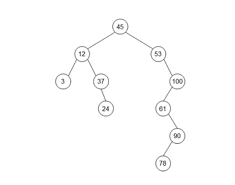
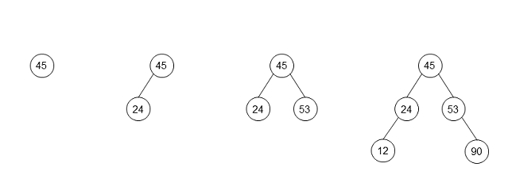

树表的查找
Tree Search
二叉排序树 Binary Tree Sort
- 递归定义
- . 也叫二叉搜索树 Binary Search Tree - BST
- . 左子树所有节点的值均小于根节点的值
- . 右子树所有节点的值均大于根节点的值
- . 左子树、右子树也是二叉排序树
- 求下图二叉树的中序遍历序列
-
. 如果中序遍历一棵二叉排序树，将得到一个递增的有序序列3-12-24-37-25-53-61-78-90-100
- 二叉排序树的创建
- . 从空树开始，每插入1个节点 都从根节点 开始；如果小于当前节点，则走左子树；否则走右子树；如果节点重复，则丢弃
- 求序列{45, 24, 53, 45, 12, 90}的二叉排序树
- 
- 二叉排序树的查找
- 1. 若二叉排序树为空，查找失败
- 2. 将给定值value与根节点的关键字key比较：
- . 如果value = key，查找成功
- . 如果value < key，则递归查找左子树
- . 如果value > key，则递归查找右子树
- 平衡二叉树 Balanced Tree
- B-树 B-Tree
- B+树 B+Tree
- . 更多信息，请访问BST